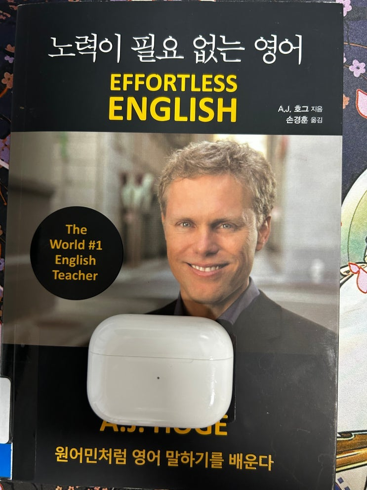
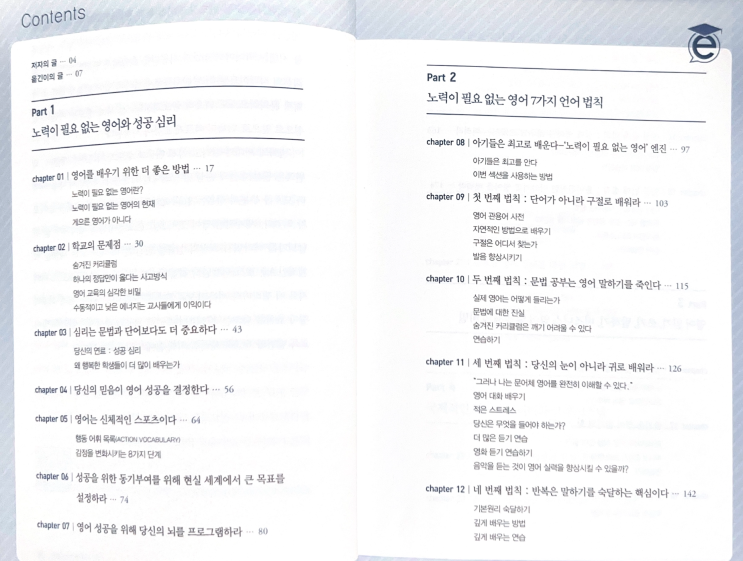
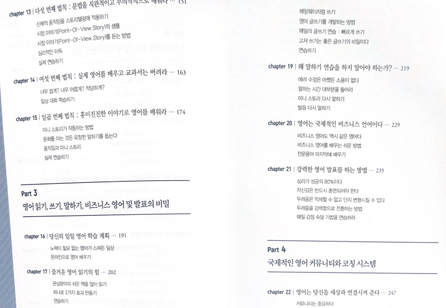

집 근처 새 도서관에 갔다가 좀 희안해 보이는 책이 있어서 하나 집어 나왔다.
영어 강사가 쓴 책인데, 원어민 처럼 영어를 배우는 지침서 같은 것이다. 그러다 보니 내용이 워낙 쉬워서 다 읽는데에는 1 시간 반 정도 걸렸다.
책은 크게
1) 기존 학교 영어 교육에 대한 비판
2) 사람이 언어를 배우는 방식에 대한 설명
3) 저자가 생각하는 효과적인 학습 Tip
이렇게 삼단 구성으로 되어 있다.
실제 목차는 아래와 같다.


책은 전반적으로 정론을 이야기 하고 있어서 큰 거부감은 없었는데 약간 책이 사이비 느낌이 있다. 그런 느낌이 왜 드는가를 생각해보았는데 (1) 영어공부에 유사과학인 NLP를 언급 하면서 검증되지 않은 심리적인 기법들은 영어 교육에 사용해야 한다고 주장한다는 점과 (2) 너내들 지금 하는 방식 다 잘못되고 망했어!
하면서 통렬하게 사람들의 동감을 얻을 수 있는 방식으로 현재 방식을 비판하다가 그러니 내가 (구원자로서) 솔루션을 주겠다! 라는 성공팔이가 자주 쓰는 전형적인 형태로 책이 구성되어 있기 때문이다.
전형적인 사이비들이 정론 98%에 2% 이상한거를 섞어서 사람들을 자기가 원하는 방향으로 유도하고 그로인한 이득을 얻는데, 나는 이 책에서 그 2%의 은은한 향기를 느꼈다 ㅋㅋㅋㅋ
왠지 느낌이 ㅋㅋㅋ 교주임. ㅋㅋㅋㅋㅋ
그러니 이 책을 읽을 마음이 있다면 가벼운 마음으로 이상한 심리학 테크닉이라고 하는 부분은 다 건너뛰고 정론쪽만 알아 서 걸러 읽으시길 바랍니다~~~ 적당히 도움은됩니다 ㅎㅎ
끝.